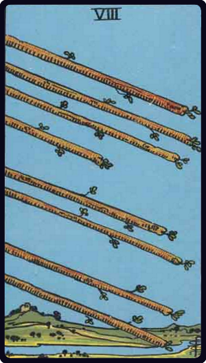

Upright Meaning
Events may move quickly. Respond clearly and use the momentum well.
Wands · Momentum
The Eight of Wands combines momentum and focused effort with the suit of Wands, which focuses on energy, creativity and ambition. This gives the card a practical lens for everyday situations.

Keywords: speed, movement, communication
Events may move quickly. Respond clearly and use the momentum well.
Delays, confusion or scattered communication may interrupt progress.
In relationships, shared enthusiasm matters, but so does having compatible direction. With the Eight of Wands, consider how momentum and focused effort is affecting the way you give, receive or communicate.
For work and study, energy, creativity and ambition becomes the setting. Notice where your energy wants to go, then give it a clear direction and a sustainable pace. The Eight of Wands suggests paying attention to momentum and focused effort as you decide what to do next.
For personal growth, explore momentum and focused effort through the lens of energy, creativity and ambition. Notice the habit or choice that most closely matches the card, then decide what a healthier version would look like.
The number or court position gives the Eight of Wands its stage of development, while Wands supplies the life area. Look closely at posture, movement, landscape and objects, and record the symbol that speaks to you first.
Practical advice: Let the card suggest a manageable experiment. Its meaning becomes more useful when you connect it to something observable in everyday life.
Compare this card with another card, save it to your favourites, or record your own interpretation in the journal.